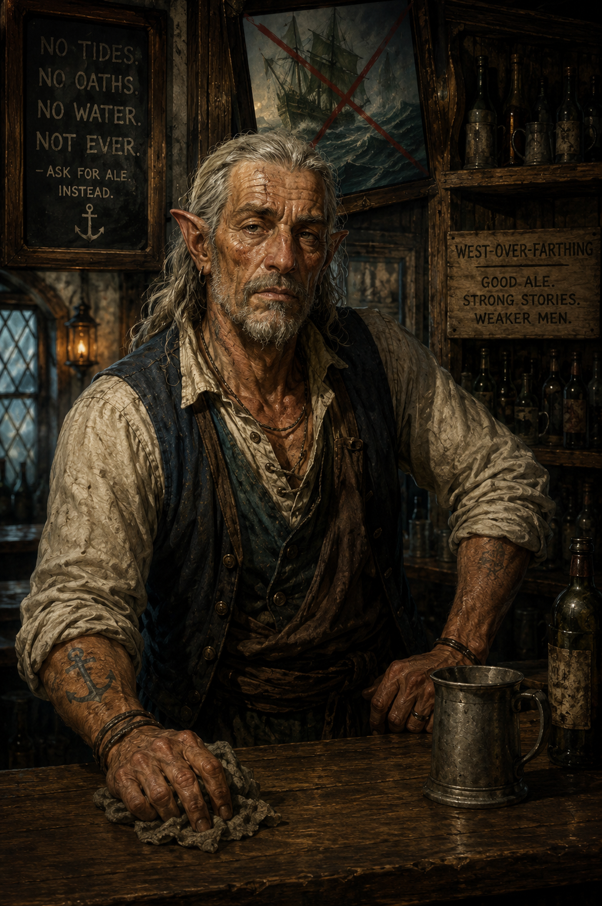
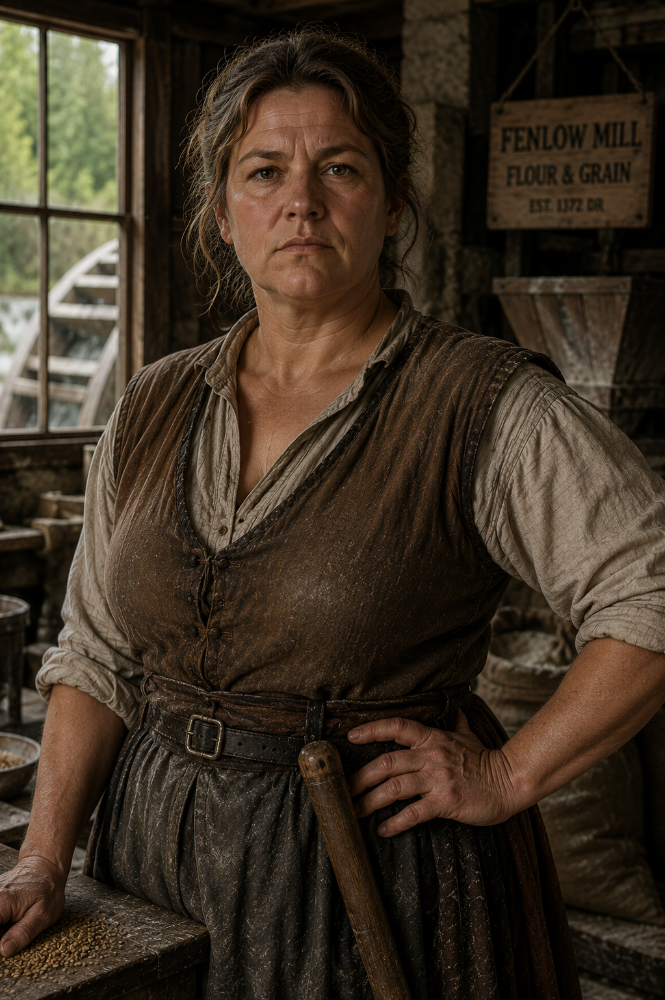
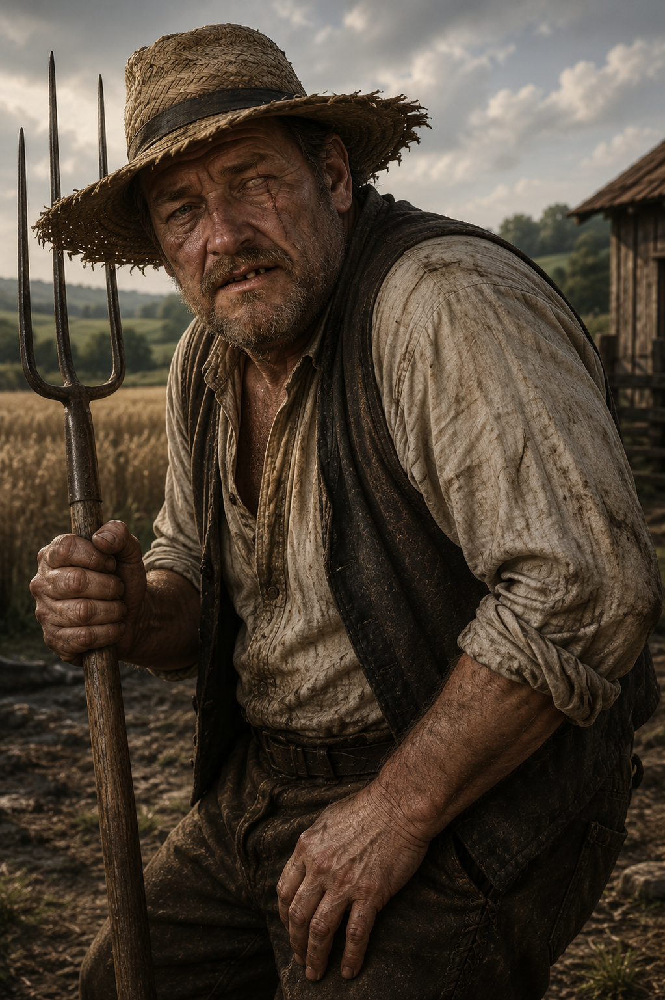
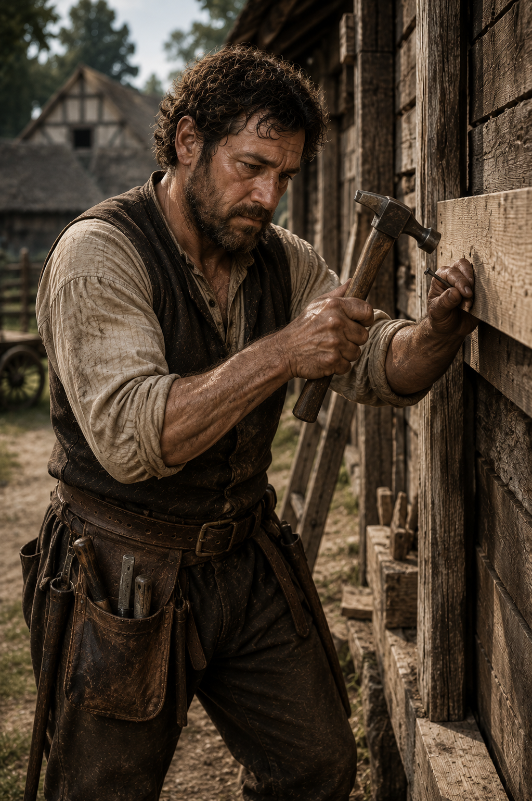
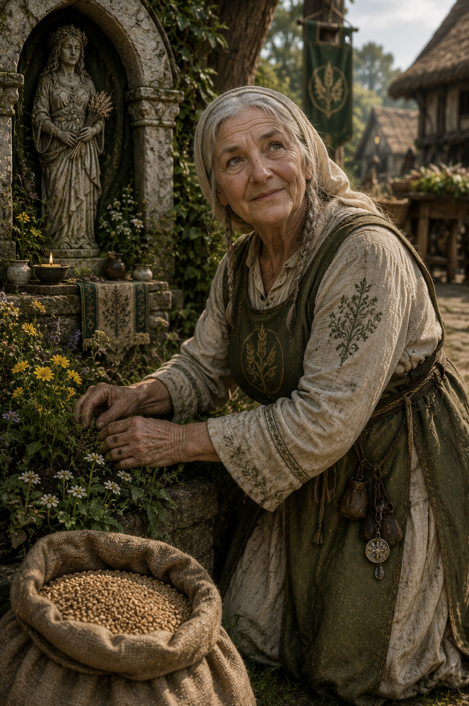
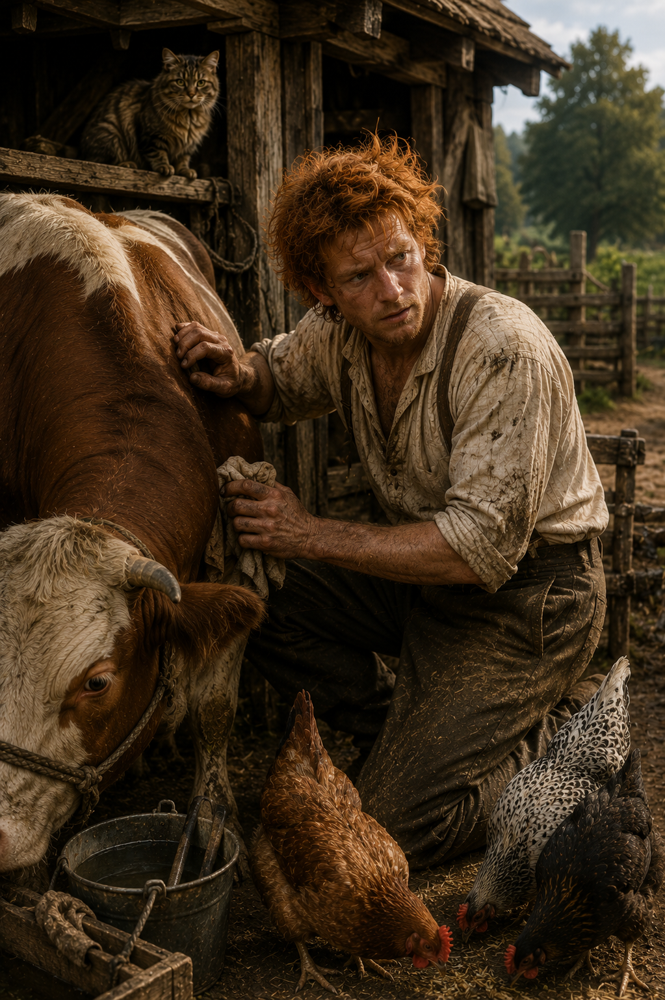
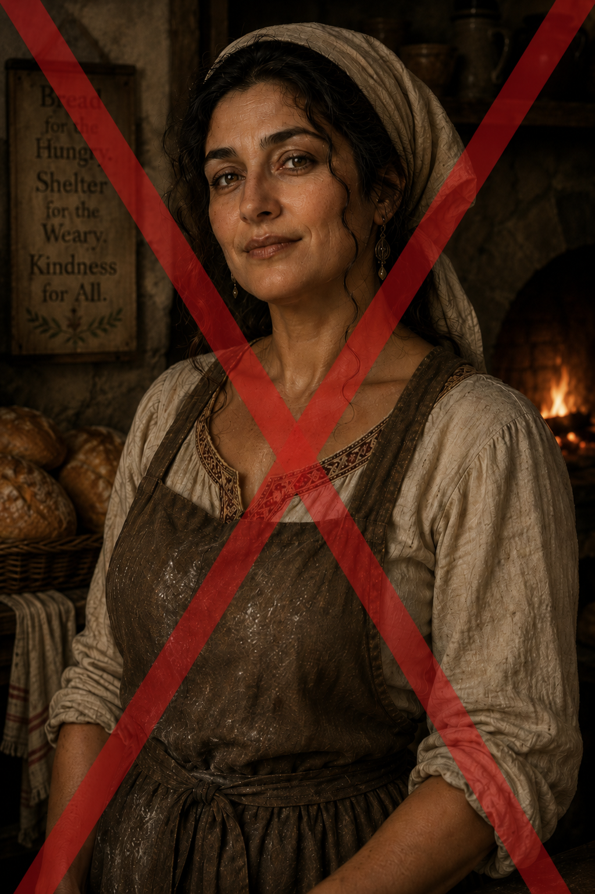

Captain Wardstone Thane is a black dragonborn whose presence alone tends to quiet a road. Scaled in deep obsidian tones that catch little light even under the sun, he cuts a disciplined, imposing figure in the livery of the Royal Road patrols of Lyrabar. His armor is practical rather than ceremonial—silvered steel reinforced for mounted travel, polished enough to reflect broken fragments of sky and road as he moves through the ruined countryside, yet still scarred by old encounters with bandits and worse things that once lurked along Impiltur’s highways. The twin crests of his horns are wrapped in faded leather strips marking years of service. Though his voice carries the gravelly depth common to his kind, it is measured and deliberate, more accustomed to issuing calm orders than threats. Before the earth-shattering disaster, Wardstone was known as a steady hand on the Royal Road, commanding his company of twenty riders with a rare balance of discipline and restraint.
The earthquake changed everything. In the days following the convulsions that tore across Impiltur, Wardstone’s patrol routes ceased to exist in any meaningful sense. Roads he once knew by heart now split into yawning chasms, and familiar waypoints have become unstable, half-collapsed remnants of stone and memory. Where once his riders pursued thieves and monster spoor, they now escort survivors from collapsing farmland, navigate fractured terrain that shifts without warning, and occasionally vanish into sinkholes that reveal impossible, lightless caverns beneath the world. The captain himself has become something harder and more haunted—a commander trying to maintain order along a road that no longer respects geography.
Nhalos, known locally as Old Moon-Eyes, is a wandering moon dog that for several years has roamed the woods and farmlands around West-Over-Farthing. Never seen by day, she bears shimmering silver fur, obsidian-black eyes, and strangely human-like expressions that unsettles many villagers. Nhalos has repeatedly aided travelers in danger, guided lost children home, and warned the village of approaching threats through frantic barking and unnatural behavior. Many farmers now leave scraps of bread or bowls of cream outside during full moons in hopes of earning her favor.
The creature became legend on the night before the earthquake of Hammer 17th, 1502 DR, when she raced wildly through the village for nearly an hour, howling, clawing at doors, and freeing livestock from their pens as though trying desperately to warn everyone of what was coming. Since the earth split open west of town, Nhalos has appeared only rarely, most often near the great chasm or wherever peril lurks unseen in the night.
Osric Bellmere, Human Reeve of West-Over-Farthing Osric serves as the village reeve(leader), acting as mediator, tax collector, and organizer of what little local authority remains in West-Over-Farthing. Neither noble nor wealthy, he inherited the responsibility from his father and has spent years trying to keep the struggling village together through famine, fire, and disaster. Thick-bearded and perpetually weary, Osric carries the burden of every failed harvest and damaged home as though each were his personal fault. He is respected less for charisma than for stubborn dependability; even after the earthquake split the western lands, he refused offers to abandon the village and instead organized rebuilding efforts himself. Though no warrior, Osric once served in a local militia during his youth and still keeps an old spear mounted behind his desk.

Thamior "Old Tide" Gavalan is a grizzled half-elven innkeeper and bartender who runs The Broken Keel in West-Over-Farthing. Once a seasoned sailor who spent decades plying the waters of the Sea of Fallen Stars, Thamior abandoned the sea after surviving a voyage that left him the sole survivor of his crew. Though he rarely speaks of what happened, the haunted look in his weathered eyes and his fierce refusal to go near deep water hint at memories he would rather forget. His long silver-streaked hair, sunworn skin, and faded nautical tattoos mark the life he left behind, while his tavern has become both refuge and fortress against the world beyond its doors. Despite his rough demeanor and sharp tongue, Thamior possesses a strong protective streak toward the people of West-Over-Farthing. He distrusts talk of strange happenings, ancient powers, and supernatural omens—not because he doubts them, but because he has seen enough of such things to know how dangerous they can be. Above all else, his motivation is simple: keep his town safe, keep his patrons happy, and make certain that whatever horrors lurk beyond the horizon never drag him back to the sea he swore he would never sail again.
Sheriff Bren Flanderson maintains order in West-Over-Farthing with the help of two part-time deputies and whatever volunteers he can muster during emergencies. A former caravan guard who settled in the village years ago, Bren is solidly built with graying hair, a crooked nose, and the cautious habits of a man who has seen too many roadside ambushes. He spends much of his time breaking up disputes, investigating livestock thefts, and calming frightened villagers after nighttime tremors. Since the earthquake, Bren has become increasingly troubled by reports of strange lights near the western chasm and several unexplained disappearances of livestock. Though competent with sword and crossbow, he knows full well that if true danger comes to West-Over-Farthing, the village possesses little strength to resist it alone.

Mara oversees the aging watermill east of West-Over-Farthing, a task made far more difficult since the earthquake altered nearby streams and weakened the old stone channels. Broad-shouldered and practical, she is known for speaking plainly and working harder than most men half her age. During the famine years, she organized grain rationing that likely saved several families from starvation, earning quiet respect throughout the village. Though not a warrior, Mara keeps a stout oak cudgel beneath her mill counter and is unafraid to confront thieves or drunken troublemakers herself.

Edrin owns one of the larger surviving farms along the eastern fields, where wheat and turnips still grow despite poor harvests and lingering fear after the earthquake. Sunburned, broad-handed, and stubbornly optimistic, he refused to abandon West-Over-Farthing during the famine even after losing much of his livestock. The earthquake destroyed part of his western pasture near the new chasm, and strange sinkholes have continued appearing in his land ever since. Though merely a farmer, Edrin is strong from years of labor and keeps an old woodcutter’s axe close at hand whenever he works the fields alone.
Lysa owns a brightly painted traveling cart that serves as both a mobile shop and one of the village’s few steady connections to neighboring settlements. She trades in dried goods, lantern oil, fabrics, trinkets, and small luxuries rarely seen in struggling farming villages. Cheerful and endlessly talkative, she seems to know every rumor carried along the roads of Impiltur before anyone else hears it. Though many assume her harmless, Lysa has survived years of dangerous travel with only a pony, a shortbow, and sharp instincts, and she is far more perceptive than her playful demeanor suggests.

Tobren is the village’s carpenter and repairman, responsible for reinforcing homes damaged by aftershocks and rebuilding abandoned structures left vacant after the famine. A widower with two young daughters, he works from dawn until candlelight simply to keep food on the table. Though generally mild-mannered, Tobren becomes grimly determined whenever the conversation turns to Andrissa’s bakery fire—his younger brother died in the blaze, and he has never fully accepted the official explanation of the "accident".

Sister Halwen tends the village shrine to Chauntea and small communal garden near the market square. Elderly but energetic, she has become a pillar of stability for villagers rattled by famine, fire, and earthquake alike. Her healing magic is modest but reliable, and many farmers still bring her offerings of seed, bread, or spring flowers in gratitude for blessings upon their fields. She believes the land around West-Over-Farthing has become spiritually unsettled since the earth split open, and she quietly searches for signs of what may lie beneath.

Harlan Rosso serves as West-Over-Farthing’s livestock healer and stablemaster, tending everything from lame oxen and milk-sick cows to injured draft horses and birthing goats. Thick-necked, weathered, and perpetually smelling of hay and herbal salves, Harlan possesses an uncanny instinct for animals and claims he can tell a horse’s illness simply by listening to its breathing. During the famine years, he became invaluable to the village by keeping weakened livestock alive long enough for many families to survive. Though gruff and often impatient with people, he shows remarkable gentleness toward animals, especially frightened or wounded ones.
Since the earthquake, Harlan has grown increasingly uneasy. Several animals near the western fields have become skittish at night, refusing water or staring silently toward the distant chasm for hours at a time. Harlan rarely speaks openly of it, but he quietly believes the beasts can sense something beneath the earth long before humans can. He has been attempting to tame the moondog Nhalos for some time.
Andrisa Fairfield was the sort of woman people trusted instinctively, though few could have explained exactly why. She lived in a modest bakery on the edge of a struggling town outside Lyrabar, where the smell of fresh bread drifted through the streets long before sunrise each morning. Neither particularly tall nor imposing, Andrisa possessed a sturdy warmth shaped by years of hard labor and quiet grief. Chestnut-brown hair streaked early with silver was usually tied back beneath a flour-dusted kerchief, and her hands—broad-palmed, scarred lightly by ovens and knives—always seemed busy kneading dough, mending torn aprons, or placing food into the hands of people who clearly could not afford it. Her face carried the softness of someone who smiled often but mourned deeply, the lingering sorrow of losing both husband and son etched gently into the corners of her eyes rather than hardening her spirit. Though practical by necessity, Andrisa believed fiercely in small kindnesses: warm meals, clean blankets, honest work, and the idea that people could still choose decency even when the world gave them every reason not to. It was that belief that led her to offer a starving young elf not punishment, but bread and a place beside the hearth.
To many in the town, Andrisa Fairfield became something more than a baker over the years. She was the woman who quietly extended credit when harvests were poor, who kept ovens burning during brutal winters simply so neighbors could gather somewhere warm, and who spoke of the old Green Faith not as distant religion but as a living reminder that all things deserved care, balance, and belonging. She carried herself with calm resilience, never pretending the world was fair yet refusing to let cruelty define her response to it. Even as starvation spread through the countryside and merchants in Lyrabar hoarded grain behind guarded walls, Andrisa continued to divide what little she had among desperate families, thinning her own stores long before admitting fear for herself. Those who knew her best understood that her kindness was not naïveté, but stubborn courage—the conscious choice to remain gentle in a world growing harsher by the season. When Lord Vramor ordered her bakery burned as punishment for Ellawain Vikvander’s thefts, the destruction shattered more than a building, it broke Andrissa's spirit, and soon her life. It extinguished one of the last warm lights in a dying town. Yet even after her death, Andrisa’s memory endured like the scent of bread from an old oven: comforting, impossible to fully forget, and powerful enough to shape the course of another life long after the fire had turned everything else to ash.